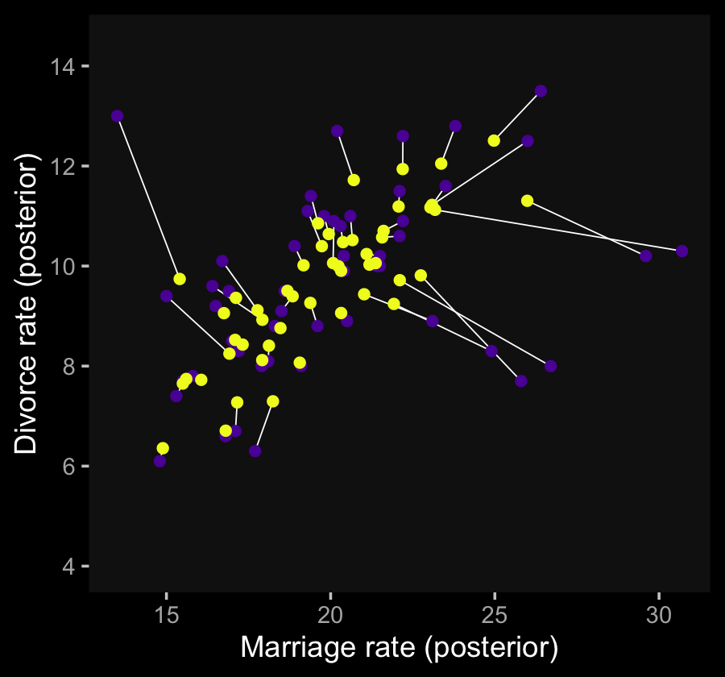
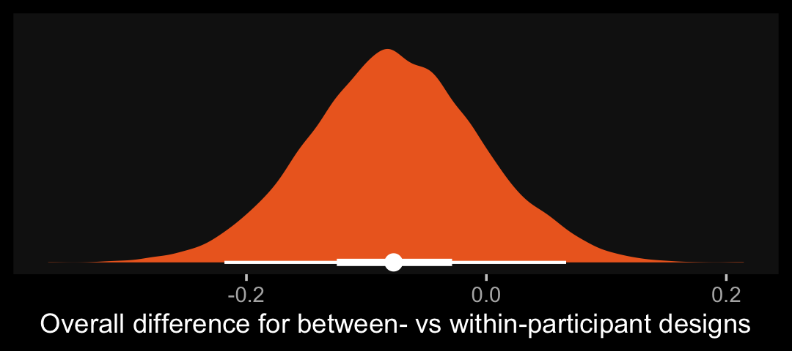

14 Missing Data and Other Opportunities
“A big advantage of Bayesian inference is that it obviates the need to be clever” (McElreath, 2015, p. 423).
For the opening example, we’re playing with the conditional probability
\[ \text{Pr(burnt down | burnt up)} = \frac{\text{Pr(burnt up, burnt down)}}{\text{Pr(burnt up)}}. \]
It works out that
\[ \text{Pr(burnt down | burnt up)} = \frac{1/3}{1/2} = \frac{2}{3}. \]
We might express the math in the middle of page 423 in tibble form like this.
library(tidyverse)
p_pancake <- 1/3
(
d <-
tibble(pancake = c("BB", "BU", "UU"),
p_burnt = c(1, .5, 0)) %>%
mutate(p_burnt_up = p_burnt * p_pancake)
) ## # A tibble: 3 x 3
## pancake p_burnt p_burnt_up
## <chr> <dbl> <dbl>
## 1 BB 1 0.333
## 2 BU 0.5 0.167
## 3 UU 0 0## # A tibble: 1 x 1
## `p (burnt_down | burnt_up)`
## <dbl>
## 1 0.667I understood McElreath’s simulation better after breaking it apart. The first part of sim_pancake() takes one random draw from the integers 1, 2, and 3. It just so happens that if we set set.seed(1), the code returns a 1.
## [1] 1So here’s what it looks like if we use seeds 2:11.
take_sample <- function(seed) {
set.seed(seed)
sample(x = 1:3, size = 1)
}
tibble(seed = 2:11) %>%
mutate(value_returned = map_dbl(seed, take_sample))## # A tibble: 10 x 2
## seed value_returned
## <int> <dbl>
## 1 2 1
## 2 3 1
## 3 4 3
## 4 5 2
## 5 6 1
## 6 7 2
## 7 8 3
## 8 9 3
## 9 10 3
## 10 11 2Each of those value_returned values stands for one of the three pancakes: 1 = BB, 2 = BU, and 3 = UU. In the next line, McElreath made slick use of a matrix to specify that. Here’s what the matrix looks like.
## [,1] [,2] [,3]
## [1,] 1 1 0
## [2,] 1 0 0See how the three columns are identified as [,1], [,2], and [,3]? If, say, we wanted to subset the values in the second column, we’d execute
## [1] 1 0which returns a numeric vector.
## num [1:2] 1 0And that 1 0 corresponds to the pancake with one burnt (i.e., 1) and one unburnt (i.e., 0) side. So when McElreath then executed sample(sides), he randomly sampled from one of those two values. In the case of pancake == 2, he randomly sampled one the pancake with one burnt and one unburnt side. Had he sampled from pancake == 1, he would have sampled from the pancake with both sides burnt.
Going forward, let’s amend McElreath’s sim_pancake() function so it will take a seed argument, which will allow us to make the output reproducible.
# simulate a `pancake` and return randomly ordered `sides`
sim_pancake <- function(seed) {
set.seed(seed)
pancake <- sample(x = 1:3, size = 1)
sides <- matrix(c(1, 1, 1, 0, 0, 0), nrow = 2, ncol = 3)[, pancake]
sample(sides)
}Let’s take this baby for a whirl.
# how many simulations would you like?
n_sim <- 1e4
d <-
tibble(seed = 1:n_sim) %>%
mutate(burnt = map(seed, sim_pancake)) %>%
unnest(burnt) %>%
mutate(side = rep(c("up", "down"), times = n() / 2))Take a look at what we’ve done.
## # A tibble: 10 x 3
## seed burnt side
## <int> <dbl> <chr>
## 1 1 1 up
## 2 1 1 down
## 3 2 1 up
## 4 2 1 down
## 5 3 1 up
## 6 3 1 down
## 7 4 0 up
## 8 4 0 down
## 9 5 1 up
## 10 5 0 downAnd now we’ll spread() and summarise() to get the value we’ve been working for.
d %>%
spread(key = side, value = burnt) %>%
summarise(`p (burnt_down | burnt_up)` = sum(up == 1 & down == 1) / (sum(up)))## # A tibble: 1 x 1
## `p (burnt_down | burnt_up)`
## <dbl>
## 1 0.658The results are within rounding error of the ideal 2/3.
Probability theory is not difficult mathematically. It’s just counting. But it is hard to interpret and apply. Doing so often seems to require some cleverness, and authors have an incentive to solve problems in clever ways, just to show off. But we don’t need that cleverness, if we ruthlessly apply conditional probability….
In this chapter, [we’ll] meet two commonplace applications of this assume-and-deduce strategy. The first is the incorporation of measurement error into our models. The second is the estimation of missing data through Bayesian imputation…
In neither application do [we] have to intuit the consequences of measurement errors nor the implications of missing values in order to design the models. All [we] have to do is state [the] information about the error or about the variables with missing values. Logic does the rest. (p. 424)
14.1 Measurement error
Let’s grab those WaffleDivorce data from back in Chapter 5.
Switch out rethinking for brms.
For the plots in this chapter, we’ll use the dark themes from the ggdark package (Grantham, 2019).
Our primary theme will be ggdark::dark_theme_gray(). One way to use the dark_theme_gray() function is to make it part of the code for an individual plot, such as ggplot() + geom_point() + dark_theme_gray(). Another way is to make dark_theme_gray() the default setting with ggplot2::theme_set(). That’s the method we’ll use.
theme_set(
dark_theme_gray() +
theme(legend.position = "none",
panel.grid = element_blank())
)
# to reset the default ggplot2 theme to its default parameters,
# execute `ggplot2::theme_set(theme_gray())` and `ggdark::invert_geom_defaults()`For the rest of our color palette, we’ll use colors from the viridis package (Garnier, 2018), which provides a variety of colorblind-safe color palettes (see Rudis et al., 2018).
The viridis_pal() function gives a list of colors within a given palette. The colors in each palette fall on a spectrum. Within viridis_pal(), the option argument allows one to select a given spectrum, “C”, in our case. The final parentheses, (), allows one to determine how many discrete colors one would like to break the spectrum up by. We’ll choose 7.
## [1] "#0D0887FF" "#5D01A6FF" "#9C179EFF" "#CC4678FF" "#ED7953FF" "#FDB32FFF" "#F0F921FF"With a little data wrangling, we can put the colors of our palette in a tibble and display them in a plot.
tibble(number = 1:7,
color_number = str_c(1:7, ". ", viridis_pal(option = "C")(7))) %>%
ggplot(aes(x = factor(0), y = reorder(color_number, number))) +
geom_tile(aes(fill = factor(number))) +
geom_text(aes(color = factor(number), label = color_number)) +
scale_color_manual(values = c(rep("black", times = 4),
rep("white", times = 3))) +
scale_fill_viridis(option = "C", discrete = T, direction = -1) +
scale_x_discrete(NULL, breaks = NULL) +
scale_y_discrete(NULL, breaks = NULL) +
ggtitle("Behold: viridis C!")
Now, let’s make use of our custom theme and reproduce/reimagine Figure 14.1.a.
color <- viridis_pal(option = "C")(7)[7]
p1 <-
d %>%
ggplot(aes(x = MedianAgeMarriage,
y = Divorce,
ymin = Divorce - Divorce.SE,
ymax = Divorce + Divorce.SE)) +
geom_pointrange(shape = 20, alpha = 2/3, color = color) +
labs(x = "Median age marriage" ,
y = "Divorce rate")Notice how viridis_pal(option = "C")(7)[7] called the seventh color in the color scheme, "#F0F921FF". For Figure 14.1.b, we’ll select the sixth color in the palette by coding viridis_pal(option = "C")(7)[6]. We’ll then combine the two subplots with patchwork.
color <- viridis_pal(option = "C")(7)[6]
p2 <-
d %>%
ggplot(aes(x = log(Population),
y = Divorce,
ymin = Divorce - Divorce.SE,
ymax = Divorce + Divorce.SE)) +
geom_pointrange(shape = 20, alpha = 2/3, color = color) +
scale_y_continuous(NULL, breaks = NULL) +
xlab("log population")
library(patchwork)
p1 | p2
Just like in the text, our plot shows states with larger populations tend to have smaller measurement error. The relation between measurement error and MedianAgeMarriage is less apparent.
14.1.1 Error on the outcome.
To get a better sense of what we’re about to do, imagine for a moment that each state’s divorce rate is normally distributed with a mean of Divorce and standard deviation Divorce.SE. Those distributions would be:
d %>%
mutate(Divorce_distribution = str_c("Divorce ~ Normal(", Divorce, ", ", Divorce.SE, ")")) %>%
select(Loc, Divorce_distribution) %>%
head()## Loc Divorce_distribution
## 1 AL Divorce ~ Normal(12.7, 0.79)
## 2 AK Divorce ~ Normal(12.5, 2.05)
## 3 AZ Divorce ~ Normal(10.8, 0.74)
## 4 AR Divorce ~ Normal(13.5, 1.22)
## 5 CA Divorce ~ Normal(8, 0.24)
## 6 CO Divorce ~ Normal(11.6, 0.94)As in the text,
in [the following] example we’ll use a Gaussian distribution with mean equal to the observed value and standard deviation equal to the measurement’s standard error. This is the logical choice, because if all we know about the error is its standard deviation, then the maximum entropy distribution for it will be Gaussian…
Here’s how to define the distribution for each divorce rate. For each observed value \(D_{\text{OBS},i}\), there will be one parameter, \(D_{\text{EST},i}\), defined by:
\[D_{\text{OBS},i} \sim \operatorname{Normal} (D_{\text{EST},i}, D_{\text{SE},i})\]
All this does is define the measurement \(D_{\text{OBS},i}\) as having the specified Gaussian distribution centered on the unknown parameter \(D_{\text{EST},i}\). So the above defines a probability for each State \(i\)’s observed divorce rate, given a known measurement error. (pp. 426–427)
Now we’re ready to fit some models. In brms, there are at least two ways to accommodate measurement error in the criterion. The first way uses the se() syntax, following the form <response> | se(<se_response>, sigma = TRUE). With this syntax, se stands for standard error, the loose frequentist analogue to the Bayesian posterior \(SD\). Unless you’re fitting a meta-analysis on summary information, which we’ll be doing at the end of this chapter, make sure to specify sigma = TRUE. Without that you’ll have no posterior for \(\sigma\)! For more information on the se() method, go to the brms reference manual (Bürkner, 2020b) and find the Additional response information subsection of the brmsformula section.
The second way uses the mi() syntax, following the form <response> | mi(<se_response>). This follows a missing data logic, resulting in Bayesian missing data imputation for the criterion values. The mi() syntax is based on the newer missing data capabilities for brms. We will cover that in more detail in the second half of this chapter.
We’ll start off using both methods. Our first model, b14.1_se, will follow the se() syntax; the second model, b14.1_mi, will follow the mi() syntax.
# put the data into a `list()`
dlist <- list(
div_obs = d$Divorce,
div_sd = d$Divorce.SE,
R = d$Marriage,
A = d$MedianAgeMarriage)
# here we specify the initial (i.e., starting) values
inits <- list(Yl = dlist$div_obs)
inits_list <- list(inits, inits)
# fit the models
b14.1_se <-
brm(data = dlist,
family = gaussian,
div_obs | se(div_sd, sigma = TRUE) ~ 0 + Intercept + R + A,
prior = c(prior(normal(0, 10), class = b),
prior(cauchy(0, 2.5), class = sigma)),
iter = 5000, warmup = 1000, cores = 2, chains = 2,
seed = 14,
control = list(adapt_delta = 0.99,
max_treedepth = 12),
inits = inits_list,
file = "fits/b14.01_se")
b14.1_mi <-
brm(data = dlist,
family = gaussian,
div_obs | mi(div_sd) ~ 0 + Intercept + R + A,
prior = c(prior(normal(0, 10), class = b),
prior(cauchy(0, 2.5), class = sigma)),
iter = 5000, warmup = 1000, cores = 2, chains = 2,
seed = 14,
control = list(adapt_delta = 0.99,
max_treedepth = 12),
save_mevars = TRUE, # note this line for the `mi()` model
inits = inits_list,
file = "fits/b14.01_mi")Before we dive into the model summaries, notice how the starting values (i.e., inits) differ by model. Even though we coded inits = inits_list for both models, the differ by fit@inits.
## [[1]]
## [[1]]$b
## [1] 0.6133048 -1.9171497 1.7551789
##
## [[1]]$sigma
## [1] 0.4668127
##
##
## [[2]]
## [[2]]$b
## [1] 0.9114156 1.2512265 -0.4276127
##
## [[2]]$sigma
## [1] 1.906943## [[1]]
## [[1]]$Yl
## [1] 12.7 12.5 10.8 13.5 8.0 11.6 6.7 8.9 6.3 8.5 11.5 8.3 7.7 8.0 11.0 10.2 10.6 12.6 11.0
## [20] 13.0 8.8 7.8 9.2 7.4 11.1 9.5 9.1 8.8 10.1 6.1 10.2 6.6 9.9 8.0 9.5 12.8 10.4 7.7
## [39] 9.4 8.1 10.9 11.4 10.0 10.2 9.6 8.9 10.0 10.9 8.3 10.3
##
## [[1]]$b
## [1] -0.5034648 1.1693530 -1.0539336
##
## [[1]]$sigma
## [1] 1.281562
##
##
## [[2]]
## [[2]]$Yl
## [1] 12.7 12.5 10.8 13.5 8.0 11.6 6.7 8.9 6.3 8.5 11.5 8.3 7.7 8.0 11.0 10.2 10.6 12.6 11.0
## [20] 13.0 8.8 7.8 9.2 7.4 11.1 9.5 9.1 8.8 10.1 6.1 10.2 6.6 9.9 8.0 9.5 12.8 10.4 7.7
## [39] 9.4 8.1 10.9 11.4 10.0 10.2 9.6 8.9 10.0 10.9 8.3 10.3
##
## [[2]]$b
## [1] -0.1543955 1.1642108 -0.4231833
##
## [[2]]$sigma
## [1] 4.802142As we explore further, it should become apparent why. Here are the primary model summaries.
## Family: gaussian
## Links: mu = identity; sigma = identity
## Formula: div_obs | se(div_sd, sigma = TRUE) ~ 0 + Intercept + R + A
## Data: dlist (Number of observations: 50)
## Samples: 2 chains, each with iter = 5000; warmup = 1000; thin = 1;
## total post-warmup samples = 8000
##
## Population-Level Effects:
## Estimate Est.Error l-95% CI u-95% CI Rhat Bulk_ESS Tail_ESS
## Intercept 21.41 6.54 8.19 33.87 1.00 1552 1693
## R 0.13 0.08 -0.02 0.28 1.00 2099 2885
## A -0.55 0.21 -0.96 -0.12 1.00 1618 1747
##
## Family Specific Parameters:
## Estimate Est.Error l-95% CI u-95% CI Rhat Bulk_ESS Tail_ESS
## sigma 1.12 0.21 0.76 1.55 1.00 2608 3165
##
## Samples were drawn using sampling(NUTS). For each parameter, Bulk_ESS
## and Tail_ESS are effective sample size measures, and Rhat is the potential
## scale reduction factor on split chains (at convergence, Rhat = 1).## Family: gaussian
## Links: mu = identity; sigma = identity
## Formula: div_obs | mi(div_sd) ~ 0 + Intercept + R + A
## Data: dlist (Number of observations: 50)
## Samples: 2 chains, each with iter = 5000; warmup = 1000; thin = 1;
## total post-warmup samples = 8000
##
## Population-Level Effects:
## Estimate Est.Error l-95% CI u-95% CI Rhat Bulk_ESS Tail_ESS
## Intercept 21.33 6.67 7.77 34.04 1.00 3579 4381
## R 0.13 0.08 -0.03 0.28 1.00 4157 4798
## A -0.55 0.22 -0.96 -0.11 1.00 3567 4693
##
## Family Specific Parameters:
## Estimate Est.Error l-95% CI u-95% CI Rhat Bulk_ESS Tail_ESS
## sigma 1.13 0.21 0.76 1.57 1.00 2181 3120
##
## Samples were drawn using sampling(NUTS). For each parameter, Bulk_ESS
## and Tail_ESS are effective sample size measures, and Rhat is the potential
## scale reduction factor on split chains (at convergence, Rhat = 1).Based on the print()/summary() information, the main parameters for the models are about the same. However, the plot deepens when we summarize the models with the broom::tidy() method.
## term estimate std.error lower upper
## 1 b_Intercept 21.41 6.54 10.53 31.84
## 2 b_R 0.13 0.08 0.00 0.25
## 3 b_A -0.55 0.21 -0.89 -0.19
## 4 sigma 1.12 0.21 0.81 1.48
## 5 lp__ -105.35 1.41 -108.09 -103.69## term estimate std.error lower upper
## 1 b_Intercept 21.33 6.67 10.15 32.05
## 2 b_R 0.13 0.08 0.00 0.25
## 3 b_A -0.55 0.22 -0.89 -0.19
## 4 sigma 1.13 0.21 0.82 1.49
## 5 Yl[1] 11.78 0.68 10.70 12.91
## 6 Yl[2] 11.20 1.02 9.53 12.90
## 7 Yl[3] 10.47 0.64 9.42 11.53
## 8 Yl[4] 12.31 0.88 10.89 13.77
## 9 Yl[5] 8.05 0.24 7.66 8.43
## 10 Yl[6] 11.02 0.74 9.82 12.24
## 11 Yl[7] 7.23 0.65 6.16 8.29
## 12 Yl[8] 9.36 0.90 7.86 10.84
## 13 Yl[9] 6.99 1.09 5.24 8.80
## 14 Yl[10] 8.54 0.31 8.02 9.05
## 15 Yl[11] 11.15 0.52 10.30 12.02
## 16 Yl[12] 9.10 0.89 7.63 10.55
## 17 Yl[13] 9.69 0.91 8.16 11.13
## 18 Yl[14] 8.12 0.42 7.42 8.81
## 19 Yl[15] 10.69 0.56 9.79 11.60
## 20 Yl[16] 10.17 0.71 8.99 11.36
## 21 Yl[17] 10.51 0.79 9.21 11.81
## 22 Yl[18] 11.95 0.63 10.90 13.00
## 23 Yl[19] 10.49 0.71 9.35 11.66
## 24 Yl[20] 10.18 1.02 8.58 11.93
## 25 Yl[21] 8.76 0.60 7.79 9.77
## 26 Yl[22] 7.77 0.47 7.00 8.56
## 27 Yl[23] 9.14 0.47 8.37 9.92
## 28 Yl[24] 7.73 0.54 6.85 8.62
## 29 Yl[25] 10.43 0.77 9.19 11.71
## 30 Yl[26] 9.54 0.58 8.57 10.50
## 31 Yl[27] 9.43 0.95 7.89 11.00
## 32 Yl[28] 9.24 0.73 8.05 10.42
## 33 Yl[29] 9.17 0.92 7.69 10.72
## 34 Yl[30] 6.39 0.43 5.70 7.09
## 35 Yl[31] 10.00 0.78 8.72 11.30
## 36 Yl[32] 6.69 0.30 6.20 7.18
## 37 Yl[33] 9.89 0.44 9.15 10.61
## 38 Yl[34] 9.76 0.97 8.12 11.32
## 39 Yl[35] 9.43 0.41 8.75 10.10
## 40 Yl[36] 11.98 0.79 10.70 13.29
## 41 Yl[37] 10.07 0.65 9.01 11.16
## 42 Yl[38] 7.79 0.40 7.12 8.45
## 43 Yl[39] 8.21 1.00 6.61 9.88
## 44 Yl[40] 8.40 0.60 7.41 9.39
## 45 Yl[41] 9.99 1.06 8.27 11.76
## 46 Yl[42] 10.95 0.63 9.92 11.99
## 47 Yl[43] 10.02 0.33 9.47 10.58
## 48 Yl[44] 11.08 0.78 9.76 12.35
## 49 Yl[45] 8.90 0.99 7.30 10.58
## 50 Yl[46] 9.01 0.46 8.24 9.77
## 51 Yl[47] 9.96 0.57 9.03 10.90
## 52 Yl[48] 10.62 0.87 9.18 12.05
## 53 Yl[49] 8.46 0.50 7.64 9.29
## 54 Yl[50] 11.48 1.13 9.58 13.31
## 55 lp__ -152.59 6.49 -163.54 -142.24Again, from b_Intercept to sigma, the output is about the same. But model b14.1_mi, based on the mi() syntax, contained posterior summaries for all 50 of the criterion values. The se() method gave us similar model result, but no posterior summaries for the 50 criterion values. The rethinking package indexed those additional 50 as div_est[i]; with the mi() method, brms indexed them as Yl[i]–no big deal. So while both brms methods accommodated measurement error, the mi() method appears to be the brms analogue to what McElreath did with his model m14.1 in the text. Thus, it’s our b14.1_mi model that follows the form
\[\begin{align*} \text{Divorce}_{\text{estimated}, i} & \sim \operatorname{Normal}(\mu_i, \sigma) \\ \mu & = \alpha + \beta_1 \text A_i + \beta_2 \text R_i \\ \text{Divorce}_{\text{observed}, i} & \sim \operatorname{Normal}(\text{Divorce}_{\text{estimated}, i}, \text{Divorce}_{\text{standard error}, i}) \\ \alpha & \sim \operatorname{Normal}(0, 10) \\ \beta_1 & \sim \operatorname{Normal}(0, 10) \\ \beta_2 & \sim \operatorname{Normal}(0, 10) \\ \sigma & \sim \operatorname{HalfCauchy}(0, 2.5). \end{align*}\]
Note. The normal(0, 10) prior McElreath used was quite informative and can lead to discrepancies between the rethinking and brms results if you’re not careful. A large issue is the default way brms handles intercept priors. From the hyperlink, Bürkner wrote:
The formula for the original intercept is
b_intercept = temp_intercept - dot_product(means_X, b), wheremeans_Xis the vector of means of the predictor variables and b is the vector of regression coefficients (fixed effects). That is, when transforming a prior on the intercept to an “equivalent” prior on the temporary intercept, you have to take the means of the predictors and well as the priors on the other coefficients into account.
If this seems confusing, you have an alternative. The 0 + Intercept part of the brm formula kept the intercept in the metric of the untransformed data, leading to similar results to those from rethinking. When your priors are vague, this might not be much of an issue. And since many of the models in Statistical rethinking use only weakly-regularizing priors, this hasn’t been much of an issue up to this point. But this model is quite sensitive to the intercept syntax. My general recommendation for applied data analysis is this: If your predictors aren’t mean centered, default to the 0 + Intercept syntax for the formula argument when using brms::brm(). Otherwise, your priors might not be doing what you think they’re doing.
Anyway, since our mi()-syntax b14.1_mi model appears to be the analogue to McElreath’s m14.1, we’ll use that one for our plots. Here’s the code for our Figure 14.2.a.
# add the posterior mean and sd for each State's D_EST to the d data
d <-
d %>%
bind_cols(
tidy(b14.1_mi) %>%
filter(str_detect(term, "Yl")) %>%
transmute(d_est = estimate,
d_est_sd = std.error)
)
# redefine the color
color <- viridis_pal(option = "C")(7)[5]
# plot
p1 <-
d %>%
ggplot(aes(x = Divorce.SE, y = d_est - Divorce)) +
geom_hline(yintercept = 0, linetype = 2, color = "white") +
geom_point(alpha = 2/3, size = 2, color = color) +
labs(x = "Observed standard error for divorce",
y = "Divorce (estimate - observed)")Before we make Figure 14.2.b, we need to fit a model that ignores measurement error.
b14.1b <-
brm(data = dlist,
family = gaussian,
div_obs ~ 0 + Intercept + R + A,
prior = c(prior(normal(0, 50), class = b, coef = Intercept),
prior(normal(0, 10), class = b),
prior(cauchy(0, 2.5), class = sigma)),
chains = 2, iter = 5000, warmup = 1000, cores = 2,
seed = 14,
control = list(adapt_delta = 0.95),
file = "fits/b14.01b")## Family: gaussian
## Links: mu = identity; sigma = identity
## Formula: div_obs ~ 0 + Intercept + R + A
## Data: dlist (Number of observations: 50)
## Samples: 2 chains, each with iter = 5000; warmup = 1000; thin = 1;
## total post-warmup samples = 8000
##
## Population-Level Effects:
## Estimate Est.Error l-95% CI u-95% CI Rhat Bulk_ESS Tail_ESS
## Intercept 35.85 7.84 20.47 51.68 1.00 1900 2529
## R -0.05 0.08 -0.21 0.11 1.00 1947 2716
## A -0.97 0.25 -1.48 -0.48 1.00 2047 2528
##
## Family Specific Parameters:
## Estimate Est.Error l-95% CI u-95% CI Rhat Bulk_ESS Tail_ESS
## sigma 1.52 0.17 1.24 1.90 1.00 2894 2894
##
## Samples were drawn using sampling(NUTS). For each parameter, Bulk_ESS
## and Tail_ESS are effective sample size measures, and Rhat is the potential
## scale reduction factor on split chains (at convergence, Rhat = 1).With the ignore-measurement-error fit in hand, we’re ready for Figure 14.2.b.
nd <-
tibble(R = mean(d$Marriage),
A = seq(from = 22, to = 30.2, length.out = 30),
div_sd = mean(d$Divorce.SE))
# red line
f_error <-
fitted(b14.1_mi, newdata = nd) %>%
as_tibble() %>%
bind_cols(nd)
# yellow line
f_no_error <-
fitted(b14.1b, newdata = nd) %>%
as_tibble() %>%
bind_cols(nd)
color_y <- viridis_pal(option = "C")(7)[7]
color_r <- viridis_pal(option = "C")(7)[4]
# plot
p2 <-
f_no_error %>%
ggplot() +
# `f_no_error`
geom_smooth(aes(x = A, y = Estimate,
ymin = Q2.5, ymax = Q97.5),
stat = "identity",
fill = color_y, color = color_y,
alpha = 1/4, size = 1/2, linetype = 2) +
# `f_error`
geom_smooth(data = f_error,
aes(x = A, y = Estimate,
ymin = Q2.5, ymax = Q97.5),
stat = "identity",
fill = color_r, color = color_r,
alpha = 1/3, size = 1/2, linetype = 1) +
# white dots
geom_pointrange(data = d,
aes(x = MedianAgeMarriage,
y = d_est,
ymin = d_est - d_est_sd,
ymax = d_est + d_est_sd),
color = "white", shape = 20, alpha = 1/2) +
scale_y_continuous("Divorce rate (posterior)", breaks = seq(from = 4, to = 14, by = 2)) +
xlab("Median age marriage") +
coord_cartesian(xlim = range(d$MedianAgeMarriage),
ylim = c(4, 15))
p1 | p2
In our plot on the right, it’s the reddish regression line that accounts for measurement error.
14.1.2 Error on both outcome and predictor.
What happens when there is measurement error on predictor variables as well? The approach is the same. Again, consider the problem generatively: Each observed predictor value is a draw from a distribution with an unknown mean, the true value, but known standard deviation. So we define a vector of parameters, one for each unknown true value, and then make those parameters the means of a family of Gaussian distributions with known standard deviations. (p. 429)
We might express this model for our current example as
\[\begin{align*} \text{Divorce}_{\text{estimated}, i} & \sim \operatorname{Normal}(\mu_i, \sigma) \\ \mu & = \alpha + \beta_1 \text A_i + \beta_2 \color{blue}{\text{Marriage_rate}_{\text{estimated}, i}} \\ \text{Divorce}_{\text{observed}, i} & \sim \operatorname{Normal}(\text{Divorce}_{\text{estimated}, i}, \text{Divorce}_{\text{standard error}, i}) \\ \color{blue}{\text{Marriage_rate}_{\text{observed}, i}} & \color{blue}\sim \color{blue}{\operatorname{Normal}(\text{Marriage_rate}_{\text{estimated}, i}, \text{Marriage_rate}_{\text{standard error}, i})} \\ \alpha & \sim \operatorname{Normal}(0, 10) \\ \beta_1 & \sim \operatorname{Normal}(0, 10) \\ \beta_2 & \sim \operatorname{Normal}(0, 10) \\ \sigma & \sim \operatorname{HalfCauchy}(0, 2.5). \end{align*}\]
In brms, you can specify error on predictors with an me() statement in the form of me(predictor, sd_predictor) where sd_predictor is a vector in the data denoting the size of the measurement error, presumed to be in a standard-deviation metric.
# the data
dlist <- list(
div_obs = d$Divorce,
div_sd = d$Divorce.SE,
mar_obs = d$Marriage,
mar_sd = d$Marriage.SE,
A = d$MedianAgeMarriage)
# the `inits`
inits <- list(Yl = dlist$div_obs)
inits_list <- list(inits, inits)
# the models
b14.2_se <-
brm(data = dlist,
family = gaussian,
div_obs | se(div_sd, sigma = TRUE) ~ 0 + Intercept + me(mar_obs, mar_sd) + A,
prior = c(prior(normal(0, 10), class = b),
prior(cauchy(0, 2.5), class = sigma)),
iter = 5000, warmup = 1000, chains = 3, cores = 3,
seed = 14,
control = list(adapt_delta = 0.95),
save_mevars = TRUE, # note the lack if `inits`
file = "fits/b14.02_se")
b14.2_mi <-
brm(data = dlist,
family = gaussian,
div_obs | mi(div_sd) ~ 0 + Intercept + me(mar_obs, mar_sd) + A,
prior = c(prior(normal(0, 10), class = b),
prior(cauchy(0, 2.5), class = sigma)),
iter = 5000, warmup = 1000, cores = 2, chains = 2,
seed = 14,
control = list(adapt_delta = 0.99,
max_treedepth = 12),
save_mevars = TRUE,
inits = inits_list,
file = "fits/b14.02_mi")We already know including inits values for our Yl[i] estimates is a waste of time for our se() model. But note how we still defined our inits values as inits <- list(Yl = dlist$div_obs) for the mi() model. Although it’s easy in brms to set the starting values for our Yl[i] estimates, much the way McElreath did, that is not the case when you have measurement error on the predictors. The brms package uses a non-centered parameterization for these, which requires users to have a deeper understanding of the underlying Stan code. This is where I get off the train, but if you want to go further, execute stancode(b14.2_mi).
Here are the two versions of the model.
## Family: gaussian
## Links: mu = identity; sigma = identity
## Formula: div_obs | se(div_sd, sigma = TRUE) ~ 0 + Intercept + me(mar_obs, mar_sd) + A
## Data: dlist (Number of observations: 50)
## Samples: 3 chains, each with iter = 5000; warmup = 1000; thin = 1;
## total post-warmup samples = 12000
##
## Population-Level Effects:
## Estimate Est.Error l-95% CI u-95% CI Rhat Bulk_ESS Tail_ESS
## Intercept 15.66 6.71 2.25 28.47 1.00 5344 6955
## A -0.44 0.20 -0.83 -0.03 1.00 6036 7507
## memar_obsmar_sd 0.27 0.10 0.07 0.48 1.00 5434 7566
##
## Family Specific Parameters:
## Estimate Est.Error l-95% CI u-95% CI Rhat Bulk_ESS Tail_ESS
## sigma 1.00 0.21 0.62 1.44 1.00 9546 7994
##
## Samples were drawn using sampling(NUTS). For each parameter, Bulk_ESS
## and Tail_ESS are effective sample size measures, and Rhat is the potential
## scale reduction factor on split chains (at convergence, Rhat = 1).## Family: gaussian
## Links: mu = identity; sigma = identity
## Formula: div_obs | mi(div_sd) ~ 0 + Intercept + me(mar_obs, mar_sd) + A
## Data: dlist (Number of observations: 50)
## Samples: 2 chains, each with iter = 5000; warmup = 1000; thin = 1;
## total post-warmup samples = 8000
##
## Population-Level Effects:
## Estimate Est.Error l-95% CI u-95% CI Rhat Bulk_ESS Tail_ESS
## Intercept 15.58 6.71 2.36 28.62 1.00 1962 3015
## A -0.44 0.20 -0.83 -0.04 1.00 2298 3580
## memar_obsmar_sd 0.27 0.11 0.06 0.49 1.00 1733 3190
##
## Family Specific Parameters:
## Estimate Est.Error l-95% CI u-95% CI Rhat Bulk_ESS Tail_ESS
## sigma 1.00 0.21 0.61 1.43 1.00 1492 1949
##
## Samples were drawn using sampling(NUTS). For each parameter, Bulk_ESS
## and Tail_ESS are effective sample size measures, and Rhat is the potential
## scale reduction factor on split chains (at convergence, Rhat = 1).We’ll use broom::tidy(), again, to get a sense of depth=2 summaries.
tidy(b14.2_se) %>%
mutate_if(is.numeric, round, digits = 2)
tidy(b14.2_mi) %>%
mutate_if(is.numeric, round, digits = 2)Due to space concerns, I’m not going to show the results, here. You can do that on your own. Both methods yielded the posteriors for Xme_memar_obs[1], but only the b14.2_mi model based on the mi() syntax yielded posteriors for the criterion, the Yl[i] summaries.
Note that you’ll need to specify save_mevars = TRUE in the brm() function in order to save the posterior samples of error-adjusted variables obtained by using the me() argument. Without doing so, functions like predict() may give you trouble.
Here is the code for Figure 14.3.a.
# add the posterior mean for each State's D_EST and M_EST to the d data
d <-
d %>%
select(!starts_with("d_est")) %>%
bind_cols(
# Divorce rate estimates
tidy(b14.2_mi) %>%
filter(str_detect(term, "Yl")) %>%
transmute(d_est = estimate),
# Marriage rate estimated
tidy(b14.2_mi) %>%
filter(str_detect(term, "Xme_")) %>%
transmute(m_est = estimate)
)
color <- viridis_pal(option = "C")(7)[3]
p1 <-
d %>%
ggplot(aes(x = Marriage.SE, y = m_est - Marriage)) +
geom_hline(yintercept = 0, linetype = 2, color = "white") +
geom_point(alpha = 2/3, size = 2, color = color) +
labs(x = "Observed standard error for marriage rate",
y = "Marriage rate (estimate - observed)")It takes just a little bit of rearranging some of the data in d to make our version of Figure 14.4.b.
color_y <- viridis_pal(option = "C")(7)[7]
color_p <- viridis_pal(option = "C")(7)[2]
# wrangle
p2 <-
full_join(
d %>%
select(Loc, Marriage, m_est) %>%
gather(key, m, -Loc) %>%
mutate(key = if_else(key == "Marriage", "observed", "posterior")),
d %>%
select(Loc, Divorce, d_est) %>%
gather(key, d, -Loc) %>%
mutate(key = if_else(key == "Divorce", "observed", "posterior")),
by = c("Loc", "key")
) %>%
# plot!
ggplot(aes(x = m, y = d)) +
geom_line(aes(group = Loc),
color = "white", size = 1/4) +
geom_point(aes(color = key)) +
scale_color_manual(values = c(color_p, color_y)) +
scale_y_continuous(breaks = seq(from = 4, to = 14, by = 2)) +
labs(x = "Marriage rate (posterior)" ,
y = "Divorce rate (posterior)") +
coord_cartesian(ylim = c(4, 14.5))
p1 | p2
In the right panel, the yellow points are model-implied; the purple ones are of the original data. When you look at both plots, it turns out our brms model regularized more aggressively than McElreath’s rethinking model. I’m unsure of why. If you understand the difference, please share with the rest of the class.
Anyway,
the big take home point for this section is that when you have a distribution of values, don’t reduce it down to a single value to use in a regression. Instead, use the entire distribution. Anytime we use an average value, discarding the uncertainty around that average, we risk overconfidence and spurious inference. This doesn’t only apply to measurement error, but also to cases which data are averaged before analysis.
Do not average. Instead, model. (p. 431)
14.2 Missing data
Starting with version 2.2.0, brms supports Bayesian missing data imputation using adaptations of the multivariate syntax (Bürkner, 2020g). Bürkner’s (2020c) vignette, Handle missing values with brms, is quite helpful for learning the basics.
14.2.1 Imputing neocortex
Once again, here are the milk data.
library(rethinking)
data(milk)
d <- milk
d <-
d %>%
mutate(neocortex.prop = neocortex.perc / 100,
logmass = log(mass))Now we’ll switch out rethinking for brms and do a little data wrangling.
detach(package:rethinking, unload = T)
library(brms)
rm(milk)
# prep data
data_list <-
list(kcal = d$kcal.per.g,
neocortex = d$neocortex.prop,
logmass = d$logmass)Here’s the structure of our data list.
## $kcal
## [1] 0.49 0.51 0.46 0.48 0.60 0.47 0.56 0.89 0.91 0.92 0.80 0.46 0.71 0.71 0.73 0.68 0.72 0.97 0.79
## [20] 0.84 0.48 0.62 0.51 0.54 0.49 0.53 0.48 0.55 0.71
##
## $neocortex
## [1] 0.5516 NA NA NA NA 0.6454 0.6454 0.6764 NA 0.6885 0.5885 0.6169 0.6032
## [14] NA NA 0.6997 NA 0.7041 NA 0.7340 NA 0.6753 NA 0.7126 0.7260 NA
## [27] 0.7024 0.7630 0.7549
##
## $logmass
## [1] 0.6678294 0.7371641 0.9202828 0.4824261 0.7839015 1.6582281 1.6808279 0.9202828
## [9] -0.3424903 -0.3856625 -2.1202635 -0.7550226 -1.1394343 -0.5108256 1.2441546 0.4382549
## [17] 1.9572739 1.1755733 2.0719133 2.5095993 2.0268316 1.6808279 2.3721112 3.5689692
## [25] 4.3748761 4.5821062 3.7072104 3.4998354 4.0064237Our statistical model follows the form
\[\begin{align*} \text{kcal}_i & \sim \operatorname{Normal}(\mu_i, \sigma) \\ \mu_i & = \alpha + \beta_1 \color{blue}{\text{neocortex}_i} + \beta_2 \text{logmass}_i \\ \color{blue}{\text{neocortex}_i} & \color{blue}\sim \color{blue}{\operatorname{Normal}(\nu, \sigma_\text{neocortex})} \\ \alpha & \sim \operatorname{Normal}(0, 100) \\ \beta_1 & \sim \operatorname{Normal}(0, 10) \\ \beta_2 & \sim \operatorname{Normal}(0, 10) \\ \sigma & \sim \operatorname{HalfCauchy}(0, 1) \\ \nu & \sim \operatorname{Normal}(0.5, 1) \\ \sigma_\text{neocortex} & \sim \operatorname{HalfCauchy}(0, 1). \end{align*}\]
If you look closely, you’ll discover the prior McElreath reported in the model equation for the intercept, \(\alpha \sim \operatorname{Normal}(0, 10)\), does not match up with the prior he used in R code 14.7, a ~ dnorm(0,100). Here we use the latter.
When writing a multivariate model in brms, I find it easier to save the model code by itself and then insert it into the brm() function. Otherwise, things get cluttered in a hurry.
b_model <-
# here's the primary `kcal` model
bf(kcal ~ 1 + mi(neocortex) + logmass) +
# here's the model for the missing `neocortex` data
bf(neocortex | mi() ~ 1) +
# here we set the residual correlations for the two models to zero
set_rescor(FALSE)Note the mi(neocortex) syntax in the kcal model. This indicates that the predictor, neocortex, has missing values that are themselves being modeled.
To get a sense of how to specify the priors for such a model, use the get_prior() function.
## prior class coef group resp dpar nlpar bound
## 1 b
## 2 Intercept
## 3 b kcal
## 4 b logmass kcal
## 5 b mineocortex kcal
## 6 student_t(3, 0.6, 2.5) Intercept kcal
## 7 student_t(3, 0, 2.5) sigma kcal
## 8 student_t(3, 0.7, 2.5) Intercept neocortex
## 9 student_t(3, 0, 2.5) sigma neocortexWith the one-step Bayesian imputation procedure in brms, you might need to use the resp argument when specifying non-defaut priors.
Anyway, here we fit the model.
b14.3 <-
brm(data = data_list,
family = gaussian,
b_model, # here we insert the model
prior = c(prior(normal(0, 100), class = Intercept, resp = kcal),
prior(normal(0.5, 1), class = Intercept, resp = neocortex),
prior(normal(0, 10), class = b, resp = kcal),
prior(cauchy(0, 1), class = sigma, resp = kcal),
prior(cauchy(0, 1), class = sigma, resp = neocortex)),
iter = 1e4, chains = 2, cores = 2,
seed = 14,
file = "fits/b14.03")The imputed neocortex values are indexed by occasion number from the original data.
## term estimate std.error lower upper
## 1 b_kcal_Intercept -0.54 0.48 -1.30 0.25
## 2 b_neocortex_Intercept 0.67 0.01 0.65 0.69
## 3 b_kcal_logmass -0.07 0.02 -0.11 -0.03
## 4 bsp_kcal_mineocortex 1.92 0.75 0.68 3.10
## 5 sigma_kcal 0.13 0.02 0.10 0.17
## 6 sigma_neocortex 0.06 0.01 0.05 0.08
## 7 Ymi_neocortex[2] 0.63 0.05 0.55 0.72
## 8 Ymi_neocortex[3] 0.62 0.05 0.54 0.71
## 9 Ymi_neocortex[4] 0.62 0.05 0.54 0.71
## 10 Ymi_neocortex[5] 0.65 0.05 0.57 0.73
## 11 Ymi_neocortex[9] 0.70 0.05 0.62 0.78
## 12 Ymi_neocortex[14] 0.66 0.05 0.58 0.74
## 13 Ymi_neocortex[15] 0.69 0.05 0.61 0.76
## 14 Ymi_neocortex[17] 0.70 0.05 0.62 0.77
## 15 Ymi_neocortex[19] 0.71 0.05 0.63 0.79
## 16 Ymi_neocortex[21] 0.65 0.05 0.57 0.72
## 17 Ymi_neocortex[23] 0.66 0.05 0.58 0.74
## 18 Ymi_neocortex[26] 0.70 0.05 0.61 0.77
## 19 lp__ 40.66 4.34 32.73 46.93Here’s the model that drops the cases with NAs on neocortex.
b14.3cc <-
brm(data = data_list,
family = gaussian,
kcal ~ 1 + neocortex + logmass,
prior = c(prior(normal(0, 100), class = Intercept),
prior(normal(0, 10), class = b),
prior(cauchy(0, 1), class = sigma)),
iter = 1e4, chains = 2, cores = 2,
seed = 14,
file = "fits/b14.03cc")Check the parameter summaries.
## term estimate std.error lower upper
## 1 b_Intercept -1.08 0.58 -2.02 -0.13
## 2 b_neocortex 2.78 0.91 1.31 4.24
## 3 b_logmass -0.10 0.03 -0.14 -0.05
## 4 sigma 0.14 0.03 0.10 0.19
## 5 lp__ -4.24 1.63 -7.37 -2.35In order to make our versions of Figure 14.4, we’ll need to do a little data wrangling with fitted().
nd <-
tibble(neocortex = seq(from = .5, to = .85, length.out = 30),
logmass = median(data_list$logmass))
f_b14.3 <-
fitted(b14.3, newdata = nd) %>%
as_tibble() %>%
bind_cols(nd)
f_b14.3 %>%
glimpse()## Rows: 30
## Columns: 10
## $ Estimate.kcal <dbl> 0.3273387, 0.3504738, 0.3736089, 0.3967441, 0.4198792, 0.4430143, 0.4…
## $ Est.Error.kcal <dbl> 0.12780512, 0.11902492, 0.11028349, 0.10159084, 0.09296065, 0.0844120…
## $ Q2.5.kcal <dbl> 0.08153786, 0.12157696, 0.16181594, 0.20207067, 0.24198680, 0.2814195…
## $ Q97.5.kcal <dbl> 0.5890201, 0.5948692, 0.5989463, 0.6039440, 0.6090801, 0.6149437, 0.6…
## $ Estimate.neocortex <dbl> 0.6715821, 0.6715821, 0.6715821, 0.6715821, 0.6715821, 0.6715821, 0.6…
## $ Est.Error.neocortex <dbl> 0.0136075, 0.0136075, 0.0136075, 0.0136075, 0.0136075, 0.0136075, 0.0…
## $ Q2.5.neocortex <dbl> 0.6449682, 0.6449682, 0.6449682, 0.6449682, 0.6449682, 0.6449682, 0.6…
## $ Q97.5.neocortex <dbl> 0.6988058, 0.6988058, 0.6988058, 0.6988058, 0.6988058, 0.6988058, 0.6…
## $ neocortex <dbl> 0.5000000, 0.5120690, 0.5241379, 0.5362069, 0.5482759, 0.5603448, 0.5…
## $ logmass <dbl> 1.244155, 1.244155, 1.244155, 1.244155, 1.244155, 1.244155, 1.244155,…To include the imputed neocortex values in the plot, we’ll extract the information from broom::tidy().
f_b14.3_mi <-
tidy(b14.3) %>%
filter(str_detect(term, "Ymi")) %>%
bind_cols(data_list %>%
as_tibble() %>%
filter(is.na(neocortex)))
f_b14.3_mi %>% head()## term estimate std.error lower upper kcal neocortex logmass
## 1 Ymi_neocortex[2] 0.6330812 0.05049556 0.5514746 0.7175017 0.51 NA 0.7371641
## 2 Ymi_neocortex[3] 0.6249972 0.05121074 0.5433133 0.7092614 0.46 NA 0.9202828
## 3 Ymi_neocortex[4] 0.6220523 0.05066788 0.5422187 0.7059027 0.48 NA 0.4824261
## 4 Ymi_neocortex[5] 0.6523927 0.04832088 0.5742548 0.7321660 0.60 NA 0.7839015
## 5 Ymi_neocortex[9] 0.7009997 0.04971825 0.6204797 0.7834208 0.91 NA -0.3424903
## 6 Ymi_neocortex[14] 0.6559745 0.04895998 0.5781669 0.7362661 0.71 NA -0.5108256Data wrangling done–here’s our code for Figure 14.4.a.
color <- viridis_pal(option = "D")(7)[4]
p1 <-
f_b14.3 %>%
ggplot(aes(x = neocortex)) +
geom_smooth(aes(y = Estimate.kcal, ymin = Q2.5.kcal, ymax = Q97.5.kcal),
stat = "identity",
fill = color, color = color, alpha = 1/3, size = 1/2) +
geom_point(data = data_list %>% as_tibble(),
aes(y = kcal),
color = "white") +
geom_point(data = f_b14.3_mi,
aes(x = estimate, y = kcal),
color = color, shape = 1) +
geom_segment(data = f_b14.3_mi,
aes(x = lower, xend = upper,
y = kcal, yend = kcal),
color = color, size = 1/4) +
labs(subtitle = "Note: For the regression line in this plot,\nlog(mass) has been set to its median, 1.244.",
x = "neocortex proportion",
y = "kcal per gram") +
coord_cartesian(xlim = c(.55, .8),
ylim = range(data_list$kcal, na.rm = T))Here we make Figure 14.4.b, combine it with Figure 14.4.a, and plot.
color <- viridis_pal(option = "D")(7)[4]
p2 <-
data_list %>%
as_tibble() %>%
ggplot(aes(x = logmass, y = neocortex)) +
geom_point(color = "white") +
geom_pointrange(data = f_b14.3_mi,
aes(y = estimate, ymin = lower, ymax = upper),
color = color, size = 1/3, shape = 1) +
scale_x_continuous("log(mass)", breaks = -2:4) +
ylab("neocortex proportion") +
coord_cartesian(xlim = range(data_list$logmass, na.rm = T),
ylim = c(.55, .8))
p1 | p2
14.2.2 Improving the imputation model
Like McElreath, we’ll update the imputation line of our statistical model to:
\[\begin{align*} \text{neocortex}_i & \sim \operatorname{Normal}(\nu_i, \sigma_\text{neocortex}) \\ \nu_i & = \alpha_\text{neocortex} + \gamma_1 \text{logmass}_i, \end{align*}\]
which includes the updated priors
\[\begin{align*} \alpha_\text{neocortex} & \sim \operatorname{Normal}(0.5, 1) \\ \gamma_1 & \sim \operatorname{Normal}(0, 10). \end{align*}\]
As far as the brms code goes, adding logmass as a predictor to the neocortex submodel is pretty simple.
# define the model
b_model <-
bf(kcal ~ 1 + mi(neocortex) + logmass) +
bf(neocortex | mi() ~ 1 + logmass) + # here's the big difference
set_rescor(FALSE)
# fit the model
b14.4 <-
brm(data = data_list,
family = gaussian,
b_model,
prior = c(prior(normal(0, 100), class = Intercept, resp = kcal),
prior(normal(0.5, 1), class = Intercept, resp = neocortex),
prior(normal(0, 10), class = b, resp = kcal),
prior(normal(0, 10), class = b, resp = neocortex),
prior(cauchy(0, 1), class = sigma, resp = kcal),
prior(cauchy(0, 1), class = sigma, resp = neocortex)),
iter = 1e4, chains = 2, cores = 2,
seed = 14,
file = "fits/b14.04")Behold the parameter summaries.
## term estimate std.error lower upper
## 1 b_kcal_Intercept -0.86 0.48 -1.63 -0.06
## 2 b_neocortex_Intercept 0.64 0.01 0.62 0.66
## 3 b_kcal_logmass -0.09 0.02 -0.13 -0.05
## 4 b_neocortex_logmass 0.02 0.01 0.01 0.03
## 5 bsp_kcal_mineocortex 2.42 0.75 1.16 3.63
## 6 sigma_kcal 0.13 0.02 0.10 0.17
## 7 sigma_neocortex 0.04 0.01 0.03 0.06
## 8 Ymi_neocortex[2] 0.63 0.03 0.57 0.69
## 9 Ymi_neocortex[3] 0.63 0.04 0.57 0.69
## 10 Ymi_neocortex[4] 0.62 0.04 0.56 0.68
## 11 Ymi_neocortex[5] 0.65 0.03 0.59 0.70
## 12 Ymi_neocortex[9] 0.66 0.04 0.60 0.72
## 13 Ymi_neocortex[14] 0.63 0.03 0.57 0.68
## 14 Ymi_neocortex[15] 0.68 0.03 0.62 0.74
## 15 Ymi_neocortex[17] 0.70 0.03 0.64 0.75
## 16 Ymi_neocortex[19] 0.71 0.03 0.65 0.77
## 17 Ymi_neocortex[21] 0.66 0.04 0.61 0.72
## 18 Ymi_neocortex[23] 0.68 0.04 0.62 0.74
## 19 Ymi_neocortex[26] 0.74 0.04 0.68 0.80
## 20 lp__ 48.69 4.21 41.21 54.77Here’s our pre-Figure 14.5 data wrangling.
f_b14.4 <-
fitted(b14.4, newdata = nd) %>%
as_tibble() %>%
bind_cols(nd)
f_b14.4_mi <-
tidy(b14.4) %>%
filter(str_detect(term, "Ymi")) %>%
bind_cols(
data_list %>%
as_tibble() %>%
filter(is.na(neocortex))
)
f_b14.4 %>%
glimpse()## Rows: 30
## Columns: 10
## $ Estimate.kcal <dbl> 0.2431289, 0.2723358, 0.3015426, 0.3307495, 0.3599563, 0.3891631, 0.4…
## $ Est.Error.kcal <dbl> 0.12866268, 0.11979911, 0.11097209, 0.10219110, 0.09346909, 0.0848242…
## $ Q2.5.kcal <dbl> -0.008941531, 0.038245247, 0.084502217, 0.130061810, 0.176411407, 0.2…
## $ Q97.5.kcal <dbl> 0.5042355, 0.5144061, 0.5258446, 0.5380099, 0.5479853, 0.5599718, 0.5…
## $ Estimate.neocortex <dbl> 0.6672695, 0.6672695, 0.6672695, 0.6672695, 0.6672695, 0.6672695, 0.6…
## $ Est.Error.neocortex <dbl> 0.009590456, 0.009590456, 0.009590456, 0.009590456, 0.009590456, 0.00…
## $ Q2.5.neocortex <dbl> 0.6479862, 0.6479862, 0.6479862, 0.6479862, 0.6479862, 0.6479862, 0.6…
## $ Q97.5.neocortex <dbl> 0.6857768, 0.6857768, 0.6857768, 0.6857768, 0.6857768, 0.6857768, 0.6…
## $ neocortex <dbl> 0.5000000, 0.5120690, 0.5241379, 0.5362069, 0.5482759, 0.5603448, 0.5…
## $ logmass <dbl> 1.244155, 1.244155, 1.244155, 1.244155, 1.244155, 1.244155, 1.244155,…## Rows: 12
## Columns: 8
## $ term <chr> "Ymi_neocortex[2]", "Ymi_neocortex[3]", "Ymi_neocortex[4]", "Ymi_neocortex[5]",…
## $ estimate <dbl> 0.6324605, 0.6292874, 0.6199172, 0.6466175, 0.6630882, 0.6280161, 0.6804330, 0.…
## $ std.error <dbl> 0.03498299, 0.03598966, 0.03567342, 0.03420052, 0.03631914, 0.03426346, 0.03396…
## $ lower <dbl> 0.5747393, 0.5708830, 0.5616605, 0.5900374, 0.6045702, 0.5713960, 0.6247196, 0.…
## $ upper <dbl> 0.6884934, 0.6878446, 0.6779808, 0.7033027, 0.7227809, 0.6835482, 0.7361110, 0.…
## $ kcal <dbl> 0.51, 0.46, 0.48, 0.60, 0.91, 0.71, 0.73, 0.72, 0.79, 0.48, 0.51, 0.53
## $ neocortex <dbl> NA, NA, NA, NA, NA, NA, NA, NA, NA, NA, NA, NA
## $ logmass <dbl> 0.7371641, 0.9202828, 0.4824261, 0.7839015, -0.3424903, -0.5108256, 1.2441546, …For our final plots, let’s play around with colors from viridis_pal(option = "D"). Here’s the code for Figure 14.5.a.
color <- viridis_pal(option = "D")(7)[3]
p1 <-
f_b14.4 %>%
ggplot(aes(x = neocortex)) +
geom_smooth(aes(y = Estimate.kcal, ymin = Q2.5.kcal, ymax = Q97.5.kcal),
stat = "identity",
fill = color, color = color, alpha = 1/2, size = 1/2) +
geom_point(data = data_list %>% as_tibble(),
aes(y = kcal),
color = "white") +
geom_point(data = f_b14.4_mi,
aes(x = estimate, y = kcal),
color = color, shape = 1) +
geom_segment(data = f_b14.4_mi,
aes(x = lower, xend = upper,
y = kcal, yend = kcal),
color = color, size = 1/4) +
labs(subtitle = "Note: For the regression line in this plot,\nlog(mass) has been set to its median, 1.244.",
x = "neocortex proportion",
y = "kcal per gram") +
coord_cartesian(xlim = c(.55, .8),
ylim = range(data_list$kcal, na.rm = T))Make the code for Figure 14.5.b, combine it with Figure 14.5.a, and plot.
color <- viridis_pal(option = "D")(7)[3]
p2 <-
data_list %>%
as_tibble() %>%
ggplot(aes(x = logmass, y = neocortex)) +
geom_point(color = "white") +
geom_pointrange(data = f_b14.4_mi,
aes(y = estimate, ymin = lower, ymax = upper),
color = color, size = 1/3, shape = 1) +
scale_x_continuous("log(mass)", breaks = -2:4) +
ylab("neocortex proportion") +
coord_cartesian(xlim = range(data_list$logmass, na.rm = T),
ylim = c(.55, .8))
p1 | p2
14.2.3 Bonus: mi() can replace me()
In one of his responses to a question thread on the Stan forums, Bürkner remarked he wasn’t a fan of the brms me() syntax and that he planned to depreciate it in the future. As a consequence, our code for models b14.2_se and b14.2_mi from above might soon break. Happily, we can use the mi() workflow to replace me(). Here’s what that might look like for an alternate version of b14.2_mi, which we’ll call b14.2_mi_mi.
b_model <-
# here's the primary `div_obs` model
bf(div_obs | mi(div_sd) ~ 0 + Intercept + mi(mar_obs) + A) +
# here's the model for the measurement error in the `mar_obs` data
bf(mar_obs | mi(mar_sd) ~ 0 + Intercept) +
# here we set the residual correlations for the two models to zero
set_rescor(FALSE)
b14.2_mi_mi <-
brm(data = dlist,
family = gaussian,
b_model, # here we insert the model
prior = c(prior(normal(0, 10), class = b),
prior(cauchy(0, 2.5), class = sigma, resp = divobs),
prior(cauchy(0, 2.5), class = sigma, resp = marobs)),
iter = 5000, warmup = 1000, cores = 2, chains = 2,
seed = 14,
control = list(adapt_delta = 0.99,
max_treedepth = 12),
save_mevars = TRUE,
inits = inits_list,
file = "fits/b14.02_mi_mi")The advantage of the mi() approach is the brm() syntax requires an explicit formula for the mar_obs predictor. The other advantage is mar_obs get’s an explicit summary in the print() output.
## Family: MV(gaussian, gaussian)
## Links: mu = identity; sigma = identity
## mu = identity; sigma = identity
## Formula: div_obs | mi(div_sd) ~ 0 + Intercept + mi(mar_obs) + A
## mar_obs | mi(mar_sd) ~ 0 + Intercept
## Data: dlist (Number of observations: 50)
## Samples: 2 chains, each with iter = 5000; warmup = 1000; thin = 1;
## total post-warmup samples = 8000
##
## Population-Level Effects:
## Estimate Est.Error l-95% CI u-95% CI Rhat Bulk_ESS Tail_ESS
## divobs_Intercept 15.38 6.94 1.64 28.96 1.00 2123 3528
## divobs_A -0.43 0.21 -0.83 -0.03 1.00 2454 3955
## marobs_Intercept 19.66 0.46 18.75 20.57 1.00 6591 6066
## divobs_mimar_obs 0.28 0.11 0.07 0.50 1.00 1966 3339
##
## Family Specific Parameters:
## Estimate Est.Error l-95% CI u-95% CI Rhat Bulk_ESS Tail_ESS
## sigma_divobs 0.99 0.21 0.62 1.44 1.00 1741 2690
## sigma_marobs 2.89 0.38 2.23 3.73 1.00 3853 5115
##
## Samples were drawn using sampling(NUTS). For each parameter, Bulk_ESS
## and Tail_ESS are effective sample size measures, and Rhat is the potential
## scale reduction factor on split chains (at convergence, Rhat = 1).If you compare the output from tidy(b14.2_mi_mi) to the output from tidy(b14.2_mi), above, you’ll see the values are largely the same, but the ordering and some of the term names have changed a bit. I’ll leave that comparison to the interested reader.
To further cement the similarities to the two models, here’s a reworking of Figure 14.4.b, this time based on our b14.2_mi_mi model.
full_join(
tibble(row = 1:50,
Divorce = dlist$div_obs,
d_est = tidy(b14.2_mi_mi) %>%
filter(str_detect(term, "Yl_divobs")) %>%
pull(estimate)) %>%
gather(key, d, -row) %>%
mutate(key = if_else(key == "Divorce", "observed", "posterior")),
tibble(row = 1:50,
Marriage = dlist$mar_obs,
d_est = tidy(b14.2_mi_mi) %>%
filter(str_detect(term, "Yl_marobs")) %>%
pull(estimate)) %>%
gather(key, m, -row) %>%
mutate(key = if_else(key == "Marriage", "observed", "posterior")),
by = c("row", "key")) %>%
# plot!
ggplot(aes(x = m, y = d)) +
geom_line(aes(group = row),
color = "white", size = 1/4) +
geom_point(aes(color = key)) +
scale_color_manual(values = c(color_p, color_y)) +
scale_y_continuous(breaks = seq(from = 4, to = 14, by = 2)) +
labs(x = "Marriage rate (posterior)" ,
y = "Divorce rate (posterior)") +
coord_cartesian(ylim = c(4, 14.5))
The results are basically the same.
To wrap up, if modern missing data methods are new to you, you might also check out van Burren’s great (2018) text, Flexible imputation of missing data: Second edition. I’m also a fan of Enders’s (2010) Applied missing data analysis, for which you can find a free sample chapter here. I’ll also quickly mention that brms accommodates multiple imputation, too.
14.3 Summary Bonus: Meta-analysis
If your mind isn’t fully blown by those measurement-error and missing-data models, let’s keep building. As it turns out, meta-analyses are often just special kinds of multilevel measurement-error models. Thus, you can use brms::brm() to fit Bayesian meta-analyses, too.
Before we proceed, I should acknowledge that this section is heavily influenced by Matti Vourre’s great blog post, Meta-analysis is a special case of Bayesian multilevel modeling. Since McElreath’s text doesn’t directly address meta-analyses, we’ll also have to borrow a bit from Gelman, Carlin, Stern, Dunson, Vehtari, and Rubin’s (2013) Bayesian data analysis, Third edition. We’ll let Gelman and colleagues introduce the topic:
Discussions of meta-analysis are sometimes imprecise about the estimands of interest in the analysis, especially when the primary focus is on testing the null hypothesis of no effect in any of the studies to be combined. Our focus is on estimating meaningful parameters, and for this objective there appear to be three possibilities, accepting the overarching assumption that the studies are comparable in some broad sense. The first possibility is that we view the studies as identical replications of each other, in the sense we regard the individuals in all the studies as independent samples from a common population, with the same outcome measures and so on. A second possibility is that the studies are so different that the results of any one study provide no information about the results of any of the others. A third, more general, possibility is that we regard the studies as exchangeable but not necessarily either identical or completely unrelated; in other words we allow differences from study to study, but such that the differences are not expected a priori to have predictable effects favoring one study over another…. this third possibility represents a continuum between the two extremes, and it is this exchangeable model (with unknown hyperparameters characterizing the population distribution) that forms the basis of our Bayesian analysis…
The first potential estimand of a meta-analysis, or a hierarchically structured problem in general, is the mean of the distribution of effect sizes, since this represents the overall ‘average’ effect across all studies that could be regarded as exchangeable with the observed studies. Other possible estimands are the effect size in any of the observed studies and the effect size in another, comparable (exchangeable) unobserved study. (pp. 125—126, emphasis in the original)
The basic version of a Bayesian meta-analysis follows the form
\[y_i \sim \operatorname{Normal}(\theta_i, \sigma_i),\]
where \(y_i\) = the point estimate for the effect size of a single study, \(i\), which is presumed to have been a draw from a Normal distribution centered on \(\theta_i\). The data in meta-analyses are typically statistical summaries from individual studies. The one clear lesson from this chapter is that those estimates themselves come with error and those errors should be fully expressed in the meta-analytic model. Which we do. The standard error from study \(i\) is specified \(\sigma_i\), which is also a stand-in for the standard deviation of the Normal distribution from which the point estimate was drawn. Do note, we’re not estimating \(\sigma_i\), here. Those values we take directly from the original studies.
Building on the model, we further presume that study \(i\) is itself just one draw from a population of related studies, each of which have their own effect sizes. As such. we presume \(\theta_i\) itself has a distribution following the form
\[\theta_i \sim \operatorname{Normal} (\mu, \tau),\]
where \(\mu\) is the meta-analytic effect (i.e., the population mean) and \(\tau\) is the variation around that mean, what you might also think of as \(\sigma_\tau\).
Since there’s no example of a meta-analysis in the text, we’ll have to get our data elsewhere. We’ll focus on Gershoff and Grogan-Kaylor’s (2016) paper, Spanking and child outcomes: Old controversies and new meta-analyses. From their introduction, we read:
Around the world, most children (80%) are spanked or otherwise physically punished by their parents (UNICEF, 2014). The question of whether parents should spank their children to correct misbehaviors sits at a nexus of arguments from ethical, religious, and human rights perspectives both in the U.S. and around the world (Gershoff, 2013). Several hundred studies have been conducted on the associations between parents’ use of spanking or physical punishment and children’s behavioral, emotional, cognitive, and physical outcomes, making spanking one of the most studied aspects of parenting. What has been learned from these hundreds of studies? (p. 453)
Our goal will be to learn Bayesian meta-analysis by answering part of that question. I’ve transcribed the values directly from Gershoff and Grogan-Kaylor’s paper and saved them as a file called spank.xlsx.
You can find the data in this project’s GitHub repository. Let’s load them and glimpse().
## Rows: 111
## Columns: 8
## $ study <chr> "Bean and Roberts (1981)", "Day and Roberts (1983)", "Minton, Kagan, and Levine (…
## $ year <dbl> 1981, 1983, 1971, 1988, 1990, 1961, 1962, 1990, 2002, 2005, 1986, 2012, 1979, 200…
## $ outcome <chr> "Immediate defiance", "Immediate defiance", "Immediate defiance", "Immediate defi…
## $ between <dbl> 1, 1, 0, 1, 1, 0, 1, 0, 0, 0, 1, 0, 1, 0, 0, 0, 0, 1, 0, 0, 0, 1, 0, 0, 1, 0, 0, …
## $ within <dbl> 0, 0, 1, 0, 0, 1, 0, 1, 1, 1, 0, 1, 0, 1, 1, 1, 1, 0, 1, 1, 1, 0, 1, 1, 0, 1, 1, …
## $ d <dbl> -0.74, 0.36, 0.34, -0.08, 0.10, 0.63, 0.19, 0.47, 0.14, -0.18, 1.18, 0.70, 0.63, …
## $ ll <dbl> -1.76, -1.04, -0.09, -1.01, -0.82, 0.16, -0.14, 0.20, -0.42, -0.49, 0.15, 0.35, -…
## $ ul <dbl> 0.28, 1.77, 0.76, 0.84, 1.03, 1.10, 0.53, 0.74, 0.70, 0.13, 2.22, 1.05, 1.71, 0.2…In this paper, the effect size of interest is a Cohen’s \(d\), derived from the formula
\[d = \frac{\mu_\text{treatment} - \mu_\text{comparison}}{\sigma_\text{pooled}},\]
where
\[\sigma_\text{pooled} = \sqrt{\frac{[(n_1 - 1) \sigma_1^2] + [(n_2 - 1) \sigma_2^2]}{n_1 + n_2 -2}}.\]
To help make the equation for \(d\) clearer for our example, we might re-express it as
\[d = \frac{\mu_\text{spanked} - \mu_\text{not spanked}}{\sigma_\text{pooled}}.\]
McElreath didn’t really focus on effect sizes in his text. If you need a refresher, you might check out Kelley and Preacher’s (2012) On effect size. But in words, Cohen’s \(d\) is a standardized mean difference between two groups.
So if you look back up at the results of glimpse(spank) you’ll notice the column d, which is indeed a vector of Cohen’s \(d\) effect sizes. The last two columns, ll and ul, are the lower and upper limits of the associated 95% frequentist confidence intervals. But we don’t want confidence intervals for our d-values; we want their standard errors. Fortunately, we can compute those with the following formula
\[SE = \frac{\text{upper limit} - \text{lower limit}}{3.92}.\]
Here it is in code.
## Rows: 111
## Columns: 9
## $ study <chr> "Bean and Roberts (1981)", "Day and Roberts (1983)", "Minton, Kagan, and Levine (…
## $ year <dbl> 1981, 1983, 1971, 1988, 1990, 1961, 1962, 1990, 2002, 2005, 1986, 2012, 1979, 200…
## $ outcome <chr> "Immediate defiance", "Immediate defiance", "Immediate defiance", "Immediate defi…
## $ between <dbl> 1, 1, 0, 1, 1, 0, 1, 0, 0, 0, 1, 0, 1, 0, 0, 0, 0, 1, 0, 0, 0, 1, 0, 0, 1, 0, 0, …
## $ within <dbl> 0, 0, 1, 0, 0, 1, 0, 1, 1, 1, 0, 1, 0, 1, 1, 1, 1, 0, 1, 1, 1, 0, 1, 1, 0, 1, 1, …
## $ d <dbl> -0.74, 0.36, 0.34, -0.08, 0.10, 0.63, 0.19, 0.47, 0.14, -0.18, 1.18, 0.70, 0.63, …
## $ ll <dbl> -1.76, -1.04, -0.09, -1.01, -0.82, 0.16, -0.14, 0.20, -0.42, -0.49, 0.15, 0.35, -…
## $ ul <dbl> 0.28, 1.77, 0.76, 0.84, 1.03, 1.10, 0.53, 0.74, 0.70, 0.13, 2.22, 1.05, 1.71, 0.2…
## $ se <dbl> 0.52040816, 0.71683673, 0.21683673, 0.47193878, 0.47193878, 0.23979592, 0.1709183…Now are data are ready, we can express our first Bayesian meta-analysis with the formula
\[\begin{align*} \text{d}_i & \sim \operatorname{Normal}(\theta_i, \sigma_i = \text{se}_i) \\ \theta_i & \sim \operatorname{Normal}(\mu, \tau) \\ \mu & \sim \operatorname{Normal}(0, 1) \\ \tau & \sim \operatorname{HalfCauchy}(0, 1). \end{align*}\]
The last two lines, of course, spell out our priors. In psychology, it’s pretty rare to see Cohen’s \(d\)-values greater than the absolute value of \(\pm 1\). So in the absence of more specific domain knowledge–which I don’t have–, it seems like \(\operatorname{Normal}(0, 1)\) is a reasonable place to start. And just like McElreath used \(\operatorname{HalfCauchy}(0, 1)\) as the default prior for the group-level standard deviations, it makes sense to use it here for our meta-analytic \(\tau\) parameter (Williams et al., 2018).
Here’s the code for the first model.
b14.5 <-
brm(data = spank,
family = gaussian,
d | se(se) ~ 1 + (1 | study),
prior = c(prior(normal(0, 1), class = Intercept),
prior(cauchy(0, 1), class = sd)),
iter = 4000, warmup = 1000, cores = 4, chains = 4,
seed = 14,
file = "fits/b14.05")One thing you might notice is our se(se) function excluded the sigma argument. If you recall from Section 14.1, we specified sigma = T in our measurement-error models. The brms default is that within se(), sigma = FALSE. As such, we have no estimate for sigma the way we would if we were doing this analysis with the raw data from the studies. Hopefully this makes sense. The uncertainty around the d-value for each study \(i\) has already been encoded in the data as se.
This brings us to another point. We typically perform meta-analyses on data summaries. In my field and perhaps in yours, this is due to the historical accident that it has not been the norm among researchers to make their data publicly available. So effect size summaries were the best we typically had. However, times are changing (e.g., Winerman, 2017). If the raw data from all the studies for your meta-analysis are available, you can just fit a multilevel model in which the data are nested in the studies. Heck, you could even allow the studies to vary by \(\sigma\) by taking the distributional modeling approach (Bürkner, 2020f) and specify something like sigma ~ 0 + study or even sigma ~ 1 + (1 | study).
But enough technical talk. Let’s look at the model results.
## Family: gaussian
## Links: mu = identity; sigma = identity
## Formula: d | se(se) ~ 1 + (1 | study)
## Data: spank (Number of observations: 111)
## Samples: 4 chains, each with iter = 4000; warmup = 1000; thin = 1;
## total post-warmup samples = 12000
##
## Group-Level Effects:
## ~study (Number of levels: 76)
## Estimate Est.Error l-95% CI u-95% CI Rhat Bulk_ESS Tail_ESS
## sd(Intercept) 0.26 0.03 0.21 0.33 1.00 2267 4194
##
## Population-Level Effects:
## Estimate Est.Error l-95% CI u-95% CI Rhat Bulk_ESS Tail_ESS
## Intercept 0.38 0.03 0.31 0.45 1.00 1454 2851
##
## Family Specific Parameters:
## Estimate Est.Error l-95% CI u-95% CI Rhat Bulk_ESS Tail_ESS
## sigma 0.00 0.00 0.00 0.00 1.00 12000 12000
##
## Samples were drawn using sampling(NUTS). For each parameter, Bulk_ESS
## and Tail_ESS are effective sample size measures, and Rhat is the potential
## scale reduction factor on split chains (at convergence, Rhat = 1).Thus, in our simple Bayesian meta-analysis, we have a population Cohen’s \(d\) of about 0.38. Our estimate for \(\tau\), 0.26, suggests we have quite a bit of between-study variability. One question you might ask is: What exactly are these Cohen’s \(d\)s measuring, anyways? We’ve encoded that in the outcome vector of the spank data.
| outcome |
|---|
| Immediate defiance |
| Low moral internalization |
| Child aggression |
| Child antisocial behavior |
| Child externalizing behavior problems |
| Child internalizing behavior problems |
| Child mental health problems |
| Child alcohol or substance abuse |
| Negative parent–child relationship |
| Impaired cognitive ability |
| Low self-esteem |
| Low self-regulation |
| Victim of physical abuse |
| Adult antisocial behavior |
| Adult mental health problems |
| Adult alcohol or substance abuse |
| Adult support for physical punishment |
There are a few things to note. First, with the possible exception of Adult support for physical punishment, all of the outcomes are negative. We prefer conditions associated with lower values for things like Child aggression and Adult mental health problems. Second, the way the data are coded, larger effect sizes are interpreted as more negative outcomes associated with children having been spanked. That is, our analysis suggests spanking children is associated with worse outcomes. What might not be immediately apparent is that even though there are 111 cases in the data, there are only 76 distinct studies.
## # A tibble: 1 x 1
## n
## <int>
## 1 76In other words, some studies have multiple outcomes. In order to better accommodate the study- and outcome-level variances, let’s fit a cross-classified Bayesian meta-analysis reminiscent of the cross-classified chimp model from Chapter 13.
b14.6 <-
brm(data = spank,
family = gaussian,
d | se(se) ~ 1 + (1 | study) + (1 | outcome),
prior = c(prior(normal(0, 1), class = Intercept),
prior(cauchy(0, 1), class = sd)),
iter = 4000, warmup = 1000, cores = 4, chains = 4,
seed = 14,
file = "fits/b14.06")## Family: gaussian
## Links: mu = identity; sigma = identity
## Formula: d | se(se) ~ 1 + (1 | study) + (1 | outcome)
## Data: spank (Number of observations: 111)
## Samples: 4 chains, each with iter = 4000; warmup = 1000; thin = 1;
## total post-warmup samples = 12000
##
## Group-Level Effects:
## ~outcome (Number of levels: 17)
## Estimate Est.Error l-95% CI u-95% CI Rhat Bulk_ESS Tail_ESS
## sd(Intercept) 0.08 0.03 0.04 0.14 1.00 2912 5424
##
## ~study (Number of levels: 76)
## Estimate Est.Error l-95% CI u-95% CI Rhat Bulk_ESS Tail_ESS
## sd(Intercept) 0.25 0.03 0.20 0.32 1.00 2189 4871
##
## Population-Level Effects:
## Estimate Est.Error l-95% CI u-95% CI Rhat Bulk_ESS Tail_ESS
## Intercept 0.35 0.04 0.28 0.43 1.00 1863 4312
##
## Family Specific Parameters:
## Estimate Est.Error l-95% CI u-95% CI Rhat Bulk_ESS Tail_ESS
## sigma 0.00 0.00 0.00 0.00 1.00 12000 12000
##
## Samples were drawn using sampling(NUTS). For each parameter, Bulk_ESS
## and Tail_ESS are effective sample size measures, and Rhat is the potential
## scale reduction factor on split chains (at convergence, Rhat = 1).Now we have two \(\tau\) parameters. We might plot them to get a sense of where the variance is at.
# we'll want this to label the plot
label <-
tibble(tau = c(.12, .3),
y = c(15, 10),
label = c("sigma['outcome']", "sigma['study']"))
# wrangle
posterior_samples(b14.6) %>%
select(starts_with("sd")) %>%
gather(key, tau) %>%
mutate(key = str_remove(key, "sd_") %>% str_remove(., "__Intercept")) %>%
# plot
ggplot(aes(x = tau)) +
geom_density(aes(fill = key),
color = "transparent") +
geom_text(data = label,
aes(y = y, label = label, color = label),
size = 5, parse = T) +
scale_fill_viridis_d(NULL, option = "B", begin = .5) +
scale_color_viridis_d(NULL, option = "B", begin = .5) +
scale_x_continuous(expression(tau), limits = c(0, NA)) +
scale_y_continuous(NULL, breaks = NULL)So at this point, the big story is there’s more variability between the studies than there is the outcomes. But I still want to get a sense of the individual outcomes. Here we’ll use tidybayes::geom_halfeye() to help us make our version of a forest plot and tidybayes::spread_draws() to help with the initial wrangling.
library(tidybayes)
b14.6 %>%
spread_draws(b_Intercept, r_outcome[outcome,]) %>%
# add the grand mean to the group-specific deviations
mutate(mu = b_Intercept + r_outcome) %>%
ungroup() %>%
mutate(outcome = str_replace_all(outcome, "[.]", " ")) %>%
# plot
ggplot(aes(x = mu, y = reorder(outcome, mu), fill = reorder(outcome, mu))) +
geom_vline(xintercept = fixef(b14.6)[1, 1], color = "grey33", size = 1) +
geom_vline(xintercept = fixef(b14.6)[1, 3:4], color = "grey33", linetype = 2) +
stat_halfeye(.width = .95, size = 2/3, color = "white") +
scale_fill_viridis_d(option = "B", begin = .2) +
labs(x = expression(italic("Cohen's d")),
y = NULL) +
theme(axis.text.y = element_text(hjust = 0),
axis.ticks.y = element_blank())
The solid and dashed vertical white lines in the background mark off the grand mean (i.e., the meta-analytic effect) and its 95% intervals. But anyway, there’s not a lot of variability across the outcomes. Let’s go one step further with the model. Doubling back to Gelman and colleagues, we read:
When assuming exchangeability we assume there are no important covariates that might form the basis of a more complex model, and this assumption (perhaps misguidedly) is widely adopted in meta-analysis. What if other information (in addition to the data \((n, y)\)) is available to distinguish among the \(J\) studies in a meta-analysis, so that an exchangeable model is inappropriate? In this situation, we can expand the framework of the model to be exchangeable in the observed data and covariates, for example using a hierarchical regression model. (p. 126)
One important covariate Gershoff and Grogan-Kaylor addressed in their meta-analysis was the type of study. The 76 papers they based their meta-analysis on contained both between- and within-participants designs. In the spank data, we’ve dummy coded that information with the between and within vectors. Both are dummy variables and \(\text{within} = 1 - \text{between}\). Here are the counts.
## # A tibble: 2 x 2
## between n
## <dbl> <int>
## 1 0 71
## 2 1 40When I use dummies in my models, I prefer to have the majority group stand as the reference category. As such, I typically name those variables by the minority group. In this case, most occasions are based on within-participant designs. Thus, we’ll go ahead and add the between variable to the model. While we’re at it, we’ll practice using the 0 + Intercept syntax.
b14.7 <-
brm(data = spank,
family = gaussian,
d | se(se) ~ 0 + Intercept + between + (1 | study) + (1 | outcome),
prior = c(prior(normal(0, 1), class = b),
prior(cauchy(0, 1), class = sd)),
iter = 4000, warmup = 1000, cores = 4, chains = 4,
seed = 14,
file = "fits/b14.07")Behold the summary.
## Family: gaussian
## Links: mu = identity; sigma = identity
## Formula: d | se(se) ~ 0 + Intercept + between + (1 | study) + (1 | outcome)
## Data: spank (Number of observations: 111)
## Samples: 4 chains, each with iter = 4000; warmup = 1000; thin = 1;
## total post-warmup samples = 12000
##
## Group-Level Effects:
## ~outcome (Number of levels: 17)
## Estimate Est.Error l-95% CI u-95% CI Rhat Bulk_ESS Tail_ESS
## sd(Intercept) 0.08 0.03 0.04 0.14 1.00 4118 6864
##
## ~study (Number of levels: 76)
## Estimate Est.Error l-95% CI u-95% CI Rhat Bulk_ESS Tail_ESS
## sd(Intercept) 0.25 0.03 0.20 0.32 1.00 3720 6769
##
## Population-Level Effects:
## Estimate Est.Error l-95% CI u-95% CI Rhat Bulk_ESS Tail_ESS
## Intercept 0.39 0.05 0.29 0.48 1.00 2853 5069
## between -0.08 0.07 -0.22 0.07 1.00 3139 5429
##
## Family Specific Parameters:
## Estimate Est.Error l-95% CI u-95% CI Rhat Bulk_ESS Tail_ESS
## sigma 0.00 0.00 0.00 0.00 1.00 12000 12000
##
## Samples were drawn using sampling(NUTS). For each parameter, Bulk_ESS
## and Tail_ESS are effective sample size measures, and Rhat is the potential
## scale reduction factor on split chains (at convergence, Rhat = 1).Let’s take a closer look at the b_between parameter.
color <- viridis_pal(option = "B")(7)[5]
posterior_samples(b14.7) %>%
ggplot(aes(x = b_between, y = 0)) +
stat_halfeye(.width = c(.5, .95), color = "white", fill = color) +
scale_y_continuous(NULL, breaks = NULL) +
xlab("Overall difference for between- vs within-participant designs")
That difference isn’t as large I’d expect it to be. But then again, I’m no spanking researcher. So what do I know?
There are other things you might do with these data. For example, you might check for trends by year or, as the authors did in their manuscript, distinguish among different severities of corporal punishment. But I think we’ve gone far enough to get you started.
If you’d like to learn more about these methods, do check out Vourre’s Meta-analysis is a special case of Bayesian multilevel modeling. From his blog, you’ll learn additional tricks, like making a more traditional-looking forest plot with the brmstools::forest() function and how our Bayesian brms method compares with frequentist meta-analyses via the metafor package (Viechtbauer, 2010, 2020). You might also check out that aforementioned paper by Williams and colleagues’, Bayesian meta-analysis with weakly informative prior distributions, to give you an empirical justification for using a half-Cauchy prior for your meta-analysis \(\tau\) parameters.
Session info
## R version 3.6.3 (2020-02-29)
## Platform: x86_64-apple-darwin15.6.0 (64-bit)
## Running under: macOS Catalina 10.15.3
##
## Matrix products: default
## BLAS: /Library/Frameworks/R.framework/Versions/3.6/Resources/lib/libRblas.0.dylib
## LAPACK: /Library/Frameworks/R.framework/Versions/3.6/Resources/lib/libRlapack.dylib
##
## locale:
## [1] en_US.UTF-8/en_US.UTF-8/en_US.UTF-8/C/en_US.UTF-8/en_US.UTF-8
##
## attached base packages:
## [1] parallel stats graphics grDevices utils datasets methods base
##
## other attached packages:
## [1] tidybayes_2.1.1 broom_0.5.5 patchwork_1.0.1.9000 viridis_0.5.1
## [5] viridisLite_0.3.0 ggdark_0.2.1 brms_2.13.5 Rcpp_1.0.5
## [9] dagitty_0.2-2 rstan_2.19.3 StanHeaders_2.21.0-1 forcats_0.5.0
## [13] stringr_1.4.0 dplyr_1.0.1 purrr_0.3.4 readr_1.3.1
## [17] tidyr_1.1.1 tibble_3.0.3 ggplot2_3.3.2 tidyverse_1.3.0
##
## loaded via a namespace (and not attached):
## [1] readxl_1.3.1 backports_1.1.9 plyr_1.8.6 igraph_1.2.5
## [5] splines_3.6.3 svUnit_1.0.3 crosstalk_1.1.0.1 TH.data_1.0-10
## [9] rstantools_2.1.1 inline_0.3.15 digest_0.6.25 htmltools_0.5.0
## [13] rsconnect_0.8.16 fansi_0.4.1 magrittr_1.5 modelr_0.1.6
## [17] matrixStats_0.56.0 xts_0.12-0 sandwich_2.5-1 prettyunits_1.1.1
## [21] colorspace_1.4-1 rvest_0.3.5 ggdist_2.1.1 haven_2.2.0
## [25] xfun_0.13 callr_3.4.4 crayon_1.3.4 jsonlite_1.7.0
## [29] survival_3.1-12 zoo_1.8-7 glue_1.4.2 gtable_0.3.0
## [33] emmeans_1.4.5 V8_3.0.2 pkgbuild_1.1.0 shape_1.4.4
## [37] abind_1.4-5 scales_1.1.1 mvtnorm_1.1-0 DBI_1.1.0
## [41] miniUI_0.1.1.1 xtable_1.8-4 stats4_3.6.3 DT_0.13
## [45] htmlwidgets_1.5.1 httr_1.4.1 threejs_0.3.3 arrayhelpers_1.1-0
## [49] ellipsis_0.3.1 pkgconfig_2.0.3 loo_2.3.1 farver_2.0.3
## [53] dbplyr_1.4.2 utf8_1.1.4 tidyselect_1.1.0 labeling_0.3
## [57] rlang_0.4.7 reshape2_1.4.4 later_1.1.0.1 munsell_0.5.0
## [61] cellranger_1.1.0 tools_3.6.3 cli_2.0.2 generics_0.0.2
## [65] ggridges_0.5.2 evaluate_0.14 fastmap_1.0.1 yaml_2.2.1
## [69] processx_3.4.4 knitr_1.28 fs_1.4.1 nlme_3.1-144
## [73] mime_0.9 xml2_1.3.1 compiler_3.6.3 bayesplot_1.7.1
## [77] shinythemes_1.1.2 rstudioapi_0.11 curl_4.3 reprex_0.3.0
## [81] stringi_1.4.6 highr_0.8 ps_1.3.4 Brobdingnag_1.2-6
## [85] lattice_0.20-38 Matrix_1.2-18 markdown_1.1 shinyjs_1.1
## [89] vctrs_0.3.4 pillar_1.4.6 lifecycle_0.2.0 bridgesampling_1.0-0
## [93] estimability_1.3 httpuv_1.5.4 R6_2.4.1 bookdown_0.18
## [97] promises_1.1.1 gridExtra_2.3 codetools_0.2-16 boot_1.3-24
## [101] colourpicker_1.0 MASS_7.3-51.5 gtools_3.8.2 assertthat_0.2.1
## [105] withr_2.2.0 shinystan_2.5.0 multcomp_1.4-13 hms_0.5.3
## [109] grid_3.6.3 coda_0.19-3 rmarkdown_2.1 shiny_1.5.0
## [113] lubridate_1.7.8 base64enc_0.1-3 dygraphs_1.1.1.6References
Bürkner, P.-C. (2020b). brms reference manual, Version 2.13.5. https://CRAN.R-project.org/package=brms/brms.pdf
Bürkner, P.-C. (2020c). Handle missing values with brms. https://CRAN.R-project.org/package=brms/vignettes/brms_missings.html
Bürkner, P.-C. (2020f). Estimating distributional models with brms. https://CRAN.R-project.org/package=brms/vignettes/brms_distreg.html
Bürkner, P.-C. (2020g). Estimating multivariate models with brms. https://CRAN.R-project.org/package=brms/vignettes/brms_multivariate.html
Enders, C. K. (2010). Applied missing data analysis. Guilford press. http://www.appliedmissingdata.com/
Garnier, S. (2018). viridis: Default color maps from ’matplotlib’ [Manual]. https://CRAN.R-project.org/package=viridis
Gelman, A., Carlin, J. B., Stern, H. S., Dunson, D. B., Vehtari, A., & Rubin, D. B. (2013). Bayesian data analysis (Third Edition). CRC press. https://stat.columbia.edu/~gelman/book/
Gershoff, E. T. (2013). Spanking and child development: We know enough now to stop hitting our children. Child Development Perspectives, 7(3), 133–137. https://doi.org/10.1111/cdep.12038
Gershoff, E. T., & Grogan-Kaylor, A. (2016). Spanking and child outcomes: Old controversies and new meta-analyses. Journal of Family Psychology, 30(4), 453. https://doi.org/10.1037/fam0000191
Grantham, N. (2019). ggdark: Dark mode for ’ggplot2’ themes [Manual]. https://CRAN.R-project.org/package=ggdark
Kelley, K., & Preacher, K. J. (2012). On effect size. Psychological Methods, 17(2), 137. https://doi.org/10.1037/a0028086
McElreath, R. (2015). Statistical rethinking: A Bayesian course with examples in R and Stan. CRC press. https://xcelab.net/rm/statistical-rethinking/
Rudis, B., Ross, N., & Garnier, S. (2018). The viridis color palettes. https://cran.r-project.org/package=viridis/vignettes/intro-to-viridis.html
van Buuren, S. (2018). Flexible imputation of missing data (Second Edition). CRC Press. https://stefvanbuuren.name/fimd/
Viechtbauer, W. (2010). Conducting meta-analyses in R with the metafor package. Journal of Statistical Software, 36(3), 1–48. https://www.jstatsoft.org/v36/i03/
Viechtbauer, W. (2020). metafor: Meta-analysis package for R [Manual]. https://CRAN.R-project.org/package=metafor
Williams, D. R., Rast, P., & Bürkner, P.-C. (2018). Bayesian meta-analysis with weakly informative prior distributions. https://doi.org/10.31234/osf.io/7tbrm
Winerman, L. (2017). Trends report: Psychologists embrace open science. Monitor on Psychology, 48(10). https://www.apa.org/monitor/2017/11/trends-open-science